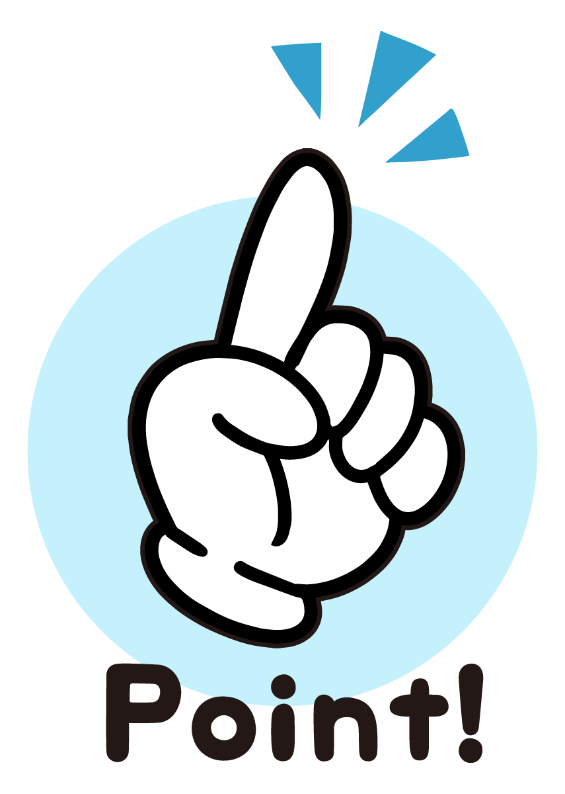
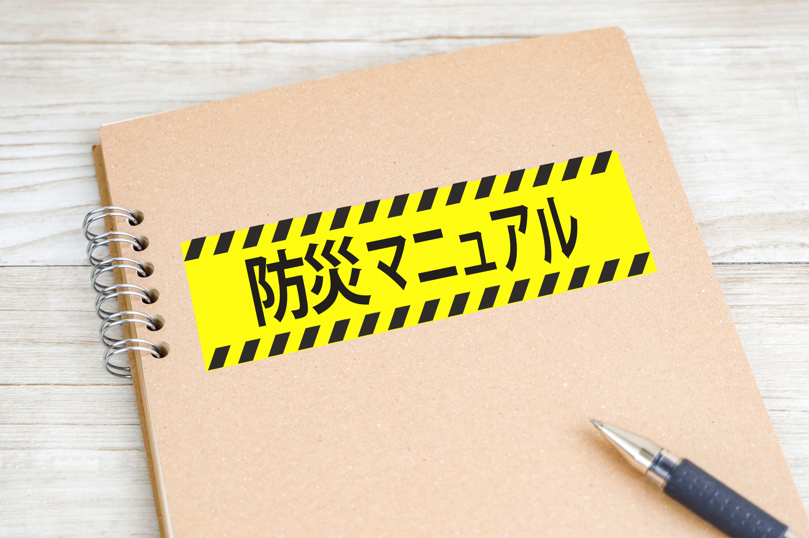
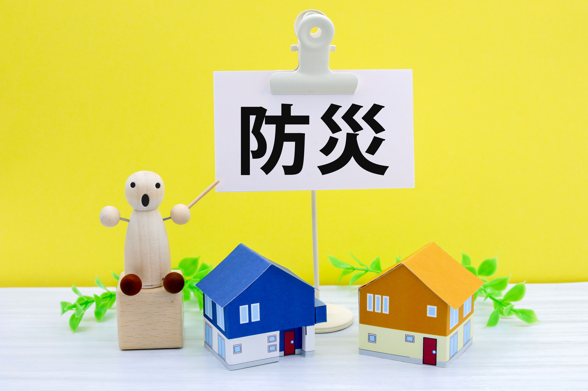
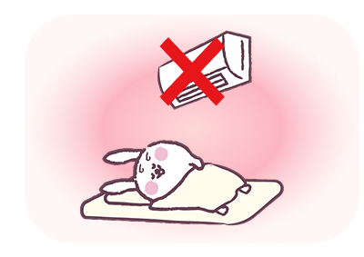
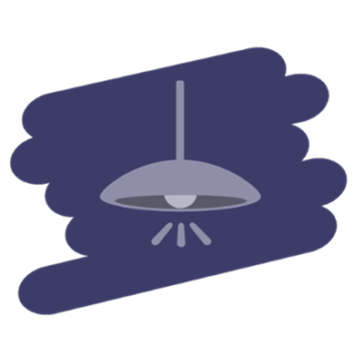
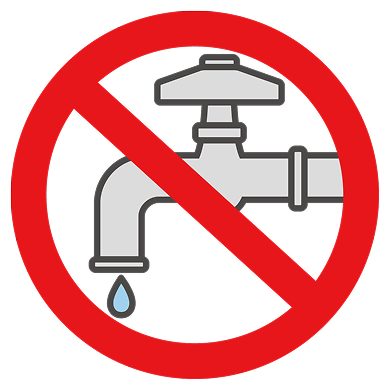
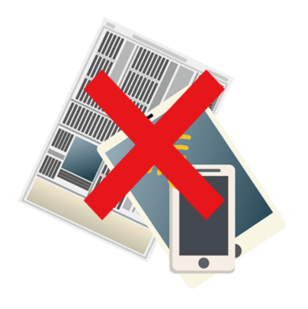

停電・断水・通信遮断など、想定外を想定する備えが重要です。
施設を守るのは、「対策」ではなく「準備」

スマイリー、BCPって言葉、聞いたことある？
なんとなく… 防災計画みたいなやつだよね？
近いね。
でも、BCPは「災害が起きたあと、どう生活を続けるか」を考える計画なんだよ。
「続ける」って、どういうこと？
避難して安全なら、それでいいんじゃないの？
避難はスタートだよ。
利用者さんが食事して、薬を飲んで、眠る
――その日常を止めない工夫がBCPなんだ。
「なるほど…。でも、災害なんていつ起こるか分からないし、
備えるのも大変そう。
そう、だからこそ「仕組み」を作っておくんだよ。
誰が指示を出すか、どこに避難するか、連絡はどう取るか、
何を優先するか。決めておくだけで、混乱が全然ちがう。
たしかに、停電しただけでもバタバタするもんね。
電話も通じないし、冷蔵庫も止まるし。
そう。エアコンや冷蔵庫が止まると命に関わる。
だから「電気を確保する」のは防災じゃなく、“命をつなぐ準備”なんだ。
小さい施設でもできる？
もちろん。全部完璧にしなくていい。
最低限の照明を動かすとか、家族とすぐ連絡を取れるようにするとか。
それも立派なBCPだよ。
じゃあ、まず何をすればいいの？
「今停電したら何が止まるか」を書き出してみよう。
そこから施設のBCPが始まるよ。

BCPは紙の計画じゃなく、“現場で動ける準備”。
今日考えることが、明日の安心につながる。
BCP対策とは？
「BCP(Business Continuity Plan) ＝事業継続計画」は、
災害や感染症などの緊急時にも、利用者の命を守り、
事業を続けるための計画です。
福祉施設には2024年度から策定義務があり、
今後は「計画＋設備対策」が求められています。


なぜ今設備BCPなのか？
「紙の計画だけでは動かない」
「実際の災害時、電気・水・通信が止まると命に関わる」
「7日間の備蓄が推奨（福祉施設向けガイドライン）」
「補助金対象になる今がチャンス」
災害や停電の長期化で
浮き彫りになった課題
停電で酸素機器や冷暖房が止まったり、
断水で入浴や調理ができなくなるケースも増えています。
備えが「命の差」につながることを
多くの施設が実感しています。

災害時に電気・水・通信が止まると命に関わる



国・自治体のガイドラインで策定義務化が進行
厚生労働省は福祉施設に対して、「7日分の水・食料の備蓄」や「代替電源の確保」などを推奨しています。
BCPは“義務”であると同時に、“信頼の証”にもなります。
補助金を活用して、実効性ある対策を
今なら、防災設備や蓄電池などの導入に使える補助金制度が充実しています。
計画とあわせて設備を整えることで、コストを抑えた導入が可能です。
エネルギーソリューションのBCPサポート体制
BCP対策は「計画を立てること」だけではありません
現場の声を聞き、設備を整え、そして運用を支える――
私たちは、策定から導入・申請・メンテナンスまで一貫してサポートします。
| 対応内容 | サポート例 |
|---|---|
| BCP策定 | 現状ヒアリング・リスクの洗い出し・計画作成支援 |
| 設備導入 | 太陽光・蓄電池・ガス発電機・空気整水器 |
| 補助金申請サポート | 申請・完了報告書の作成、提出支援 |